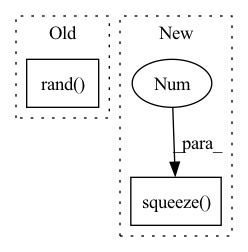

Pattern ID :1877
Before Change
enc_h, (dec_h0, dec_c0) = self.Encoder(embed_enc_inputs, None)
dec_state = (dec_h0, dec_c0)
pred_tour_list, neg_log = [], 0
dec_i1 = torch.rand( batch, 1, embed) .to(device)
for i in range(city_t):
dec_h, dec_state = self.Decoder(dec_i1, dec_state)
logits, probs, dec_i1 = self.pointing_mechanism(After Change
logits, dec_input = self.pointer(query, ref, mask)
log_p = torch.log_softmax(logits, dim = -1)
// next_node = torch.argmax(log_p, dim = 1).type(torch.long)
next_node = torch.multinomial(log_p.exp(), 1).type(torch.long).squeeze(1 )
pi_list.append(next_node)
log_ps.append(log_p)
mask += torch.zeros(batch,city_t).to(device).scatter_(dim = 1, index = next_node.unsqueeze(1), value = 1)In pattern: SUPERPATTERN
Frequency: 3
Non-data size: 2
Instances Fragment ID: 13229435
Project Name: rintarooo/tsp_drl_ptrnet
Commit Name: baba7bab0eb239771948cc519681967a5498129b
Time: 2020-08-23
Author: 310rnomeado@gmail.com
File Name: actor.py
M Class Name: PtrNet1
N Class Name: PtrNet1
M Method Name: forward(3)
N Method Name: forward(3)
M Parent Class: nn.Module
N Parent Class: nn.Module
M File Name: actor.py
N File Name: actor.py
M Start Line: 30
M End Line: 59
N Start Line: 45
N End Line: 65
Before Change
enc_h, (dec_h0, dec_c0) = self.Encoder(embed_enc_inputs, None)
hidden = enc_h.size(2)
dec_state = (dec_h0, dec_c0)
dec_i1 = torch.rand( batch, 1, hidden) .to(device)//hidden not embed
for i in range(city_t):
dec_h, dec_state = self.LSTMprocess_block(dec_i1, dec_state)
dec_i1 = self.attending_mechanism(enc_h, dec_h)After Change
dec_input = self.dec_input.unsqueeze(0).repeat(batch,1).unsqueeze(1).to(device)
for i in range(city_t):
_, (h, c) = self.Decoder(dec_input, (h, c))
query, ref = h.squeeze(0 ) , enc_h
for i in range(self.n_glimpse):
query = self.glimpse(query, ref)
""" Fragment ID: 13229436
Project Name: rintarooo/tsp_drl_ptrnet
Commit Name: baba7bab0eb239771948cc519681967a5498129b
Time: 2020-08-23
Author: 310rnomeado@gmail.com
File Name: critic.py
M Class Name: PtrNet2
N Class Name: PtrNet2
M Method Name: forward(3)
N Method Name: forward(3)
M Parent Class: nn.Module
N Parent Class: nn.Module
M File Name: critic.py
N File Name: critic.py
M Start Line: 31
M End Line: 46
N Start Line: 35
N End Line: 50
Before Change
self.cfg = cfg
def forward(self, points, features):
proposals = Boxes3D(20 * torch.rand( (25, 7)) .cuda())
return proposals
After Change
features = features.permute(0, 2, 1)
proposals = Boxes3D(self.mlp(features))
_, indices = torch.topk(proposals.score, k=self.cfg.PROPOSAL.TOPK, dim=1)
indices = indices.squeeze(0).squeeze(-1 )
proposals = Boxes3D(proposals.tensor[:, indices])
return proposals
Fragment ID: 13229439
Project Name: jhultman/vision3d
Commit Name: 8439cb424b206f497ff582b81f58bd2cdd45dd0d
Time: 2020-02-10
Author: 27909223+jhultman@users.noreply.github.com
File Name: pvrcnn/proposal.py
M Class Name: ProposalLayer
N Class Name: ProposalLayer
M Method Name: forward(3)
N Method Name: forward(3)
M Parent Class: nn.Module
N Parent Class: nn.Module
M File Name: pvrcnn/proposal.py
N File Name: pvrcnn/proposal.py
M Start Line: 17
M End Line: 17
N Start Line: 28
N End Line: 32